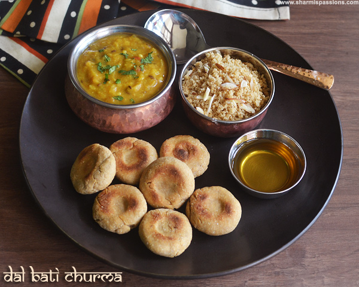

Dal Bati Churma

Dal Bati Churma is a traditional, tasty meal made as a combo of savoury dal, deep fired wheat dough (bati) and crumbled,
sweetened & flavoured bati (churma).
Dal Bati Churma is a Rajasthani dish that is a must
try at home for the assortment of taste & to make the day special.
Serve the Rajasthani Dal Bati Churma for a wholesome weekend lunch or even for parties with friends.
Ingredients
For Dal:
- 1/4 cup chana dal
- 1/4 cup moong dal
- 1/4 cup toor dal
- 1 tbsp urad dal
- 1 tsp garlic finely chopped
- 1 medium sized onion finely chopped
- 1 medium sized tomatoes chopped roughly
- 2 tsp chilli powder
- 1 tsp coriander powder
- 1/2 tsp turmeric powder
- 1/2 tsp garam masala powder
- 2 tsp coriander leaves finely chopped
To Temper:
- 1 tbsp ghee
- 2 cloves
- 1 bay leaf
- 2 tsp cumin seeds
- 1 green chilli slitted
- a pinch hing
For Bati:
- 1 cup whole wheat flour
- 1/4 cup fine sooji / rava
- 2 tbsp besan flour
- 1/2 cup milk
- 3 tbsp melted ghee
- 1/4 tsp ajwain
- salt to taste
For Churma:
- 1 cup whole wheat flour
- 1/4 cup fine sooji / rava
- 4 tsp melted ghee
- 2 tbsp almond slivers
- 1/4 tsp cardamom powder
- 4 tbsp powdered sugar
- melted ghee / oil for deep frying
For Serving:
- lemon juice
- raw onion chopped
- ghee
Instructions
Dal:
- Rinse the dals well and pressure cook for 5 whistles along with a pinch of turmeric powder, salt and 3 cups
of water.
- Once pressure releases, mash it well with a ladle and set aside.
- In a pan heat ghee – add the items listed under ‘to temper’ and let it splutter.
- Add chopped onion, garlic and saute till onions turn transparent.
- Then add tomatoes along with red chilli, turmeric, coriander and garam masala powders along with salt
(adjust as we have already added in dal).
- Sauté for few mins until raw smell of tomatoes leave.
- Now add mashed dal and mix well.
- Let the dal boil for 5 mins, add little water if its too thick.
- Finally garnish with coriander leaves and switch off.
Bati:
- In a mixing bowl – take all the ingredients listed under ‘for bati’, mix well and knead it together to form
a stiff dough.
- Divide the dough into small balls and flatten them using your palms.
- Make a small indentation in the centre of the baatis using your thumb.
- Arrange them in a baking tray.
- Preheat oven at 180 deg C for 10mins.
- Bake in preheated oven for at least 25-30mins or until the top turns golden.
- When it is still hot, brush with ghee.
Churma:
- In a mixing bowl -take wheat flour, rava and ghee, add water to form a stiff dough.
- Make patties with your palms with a indentation at the center.
- Heat oil (you can use ghee too) and deep fry the patties in hot oil till golden brown.
- Turn over and cook for even cooking, cook in low medium flame.
- Drain in tissue paper and set aside to cool down.
- Once it is completely cool, break them into small pieces and grind it using a mixer.
- Grind it a little coarse. I did it in batches as I used my small mixie jar.
- Collect the mixture in a bowl, add powdered sugar and cardamom powder and mix well.
- Chop almonds lengthwise add it along with ghee and give a quick mix.
Serving Suggestion :
- Heat the dal again till piping hot.
- Break the baatis and place it in serving plate, pour dal over it, drizzle ghee and sprinkle chopped onions,
add lemon juice and have it with churma.
- I loved to have it soaked for while then have it to enjoy the full flavours.
Notes :
- You can make churma a day before and refrigerate it.
- Traditionally batis are deep fried in ghee but I used oil.
- You can turn over the batis to other side after 10 mins for even baking.
- The baatis are meant to have cracks as we have a stiff dough.
- Use ghee generously that's the specialty of the dish.
Back to the Recipes